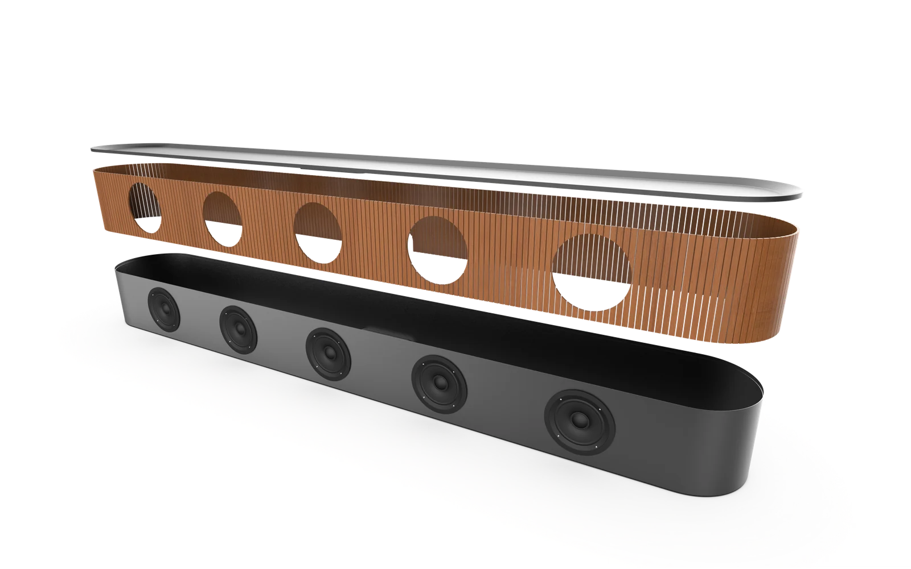
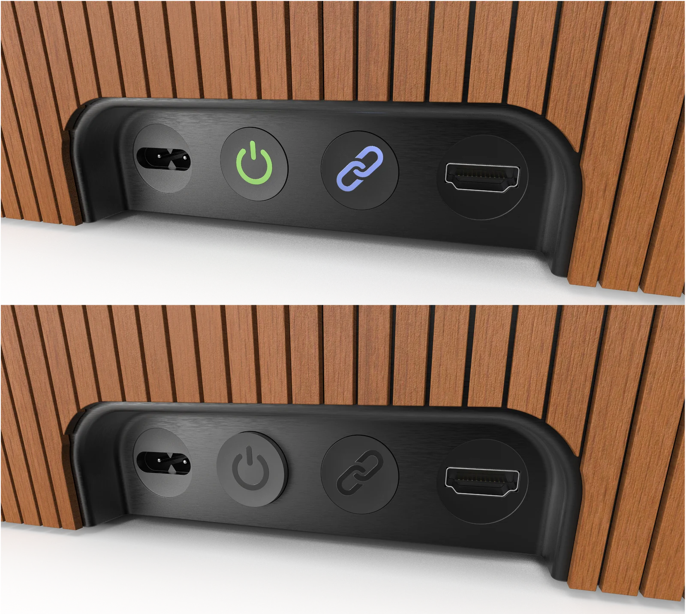
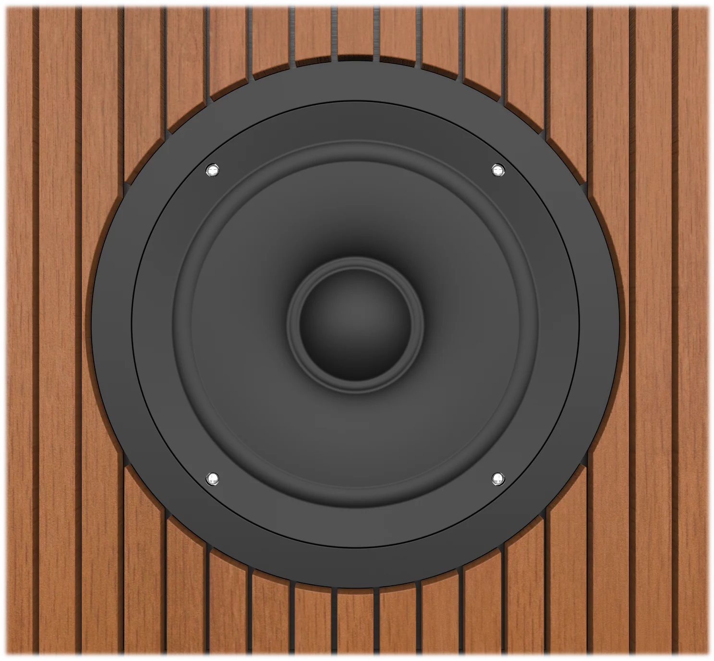
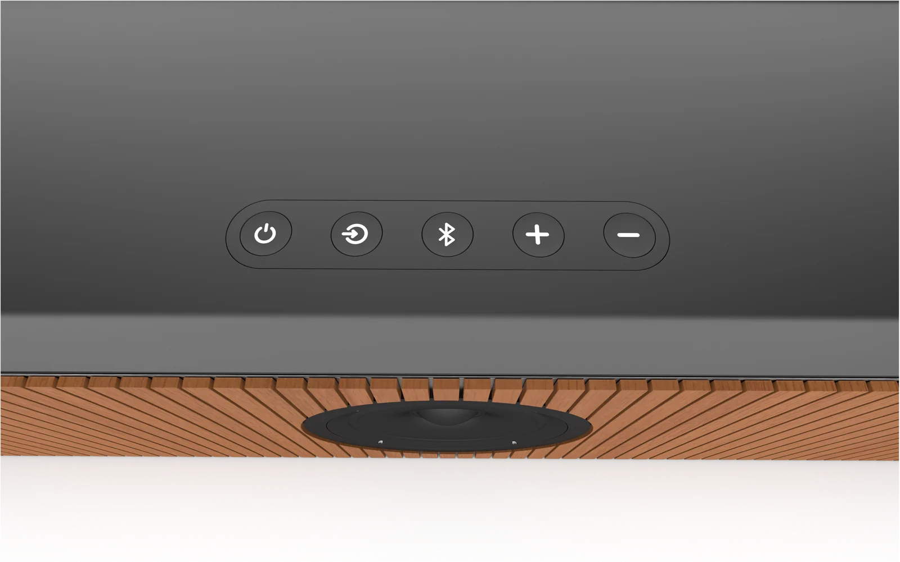
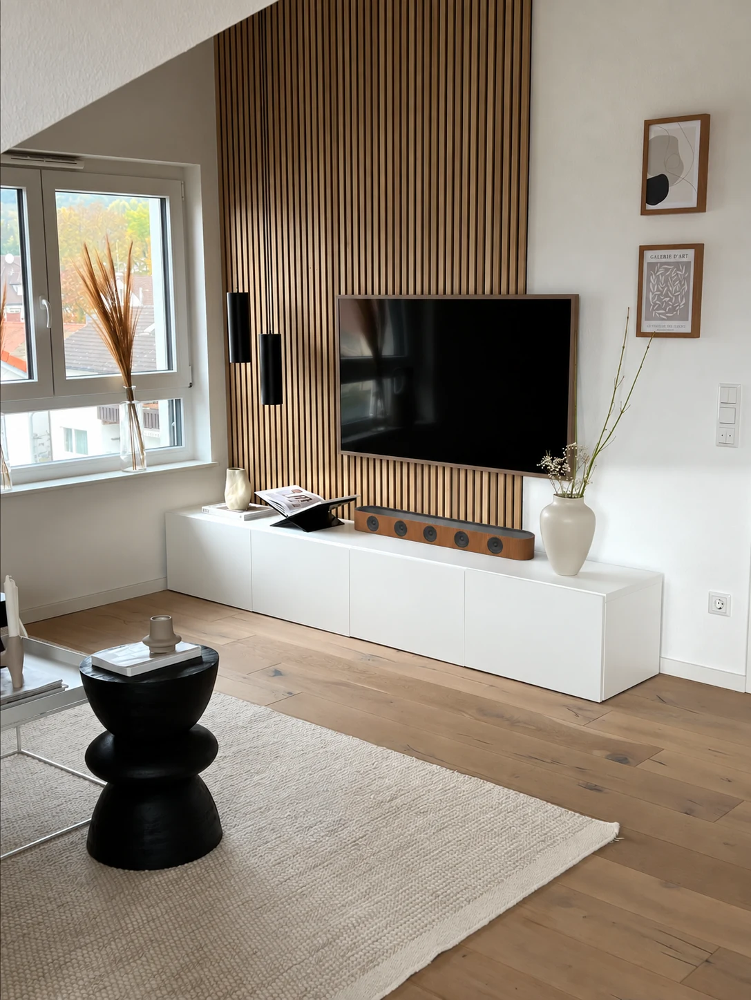
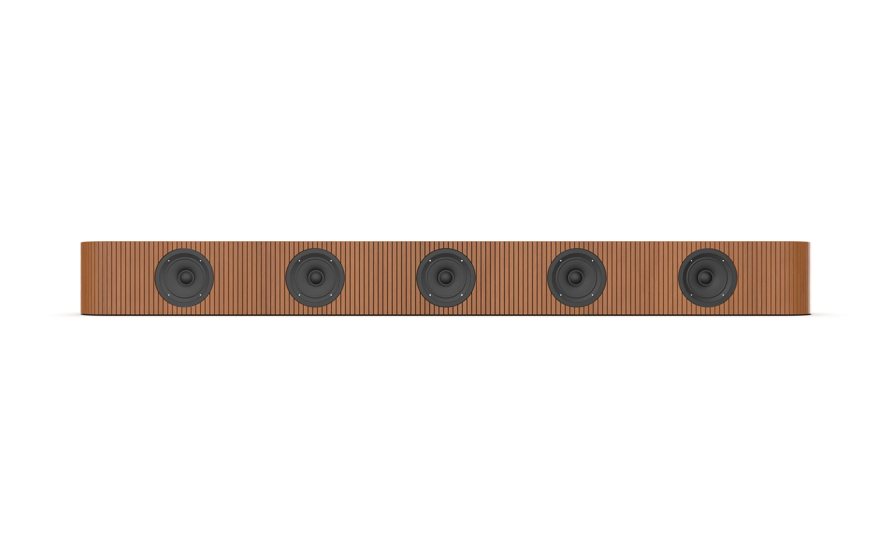
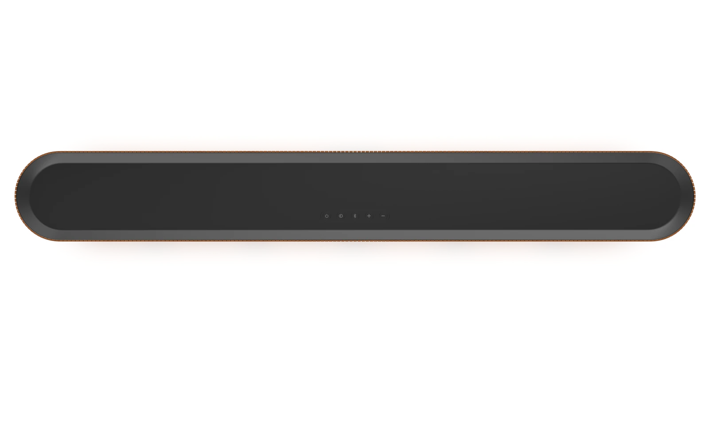
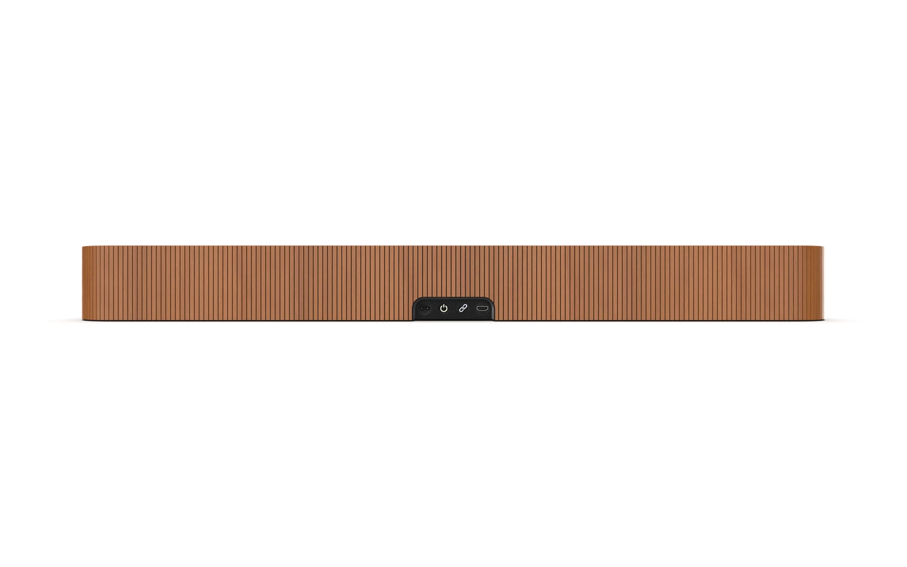
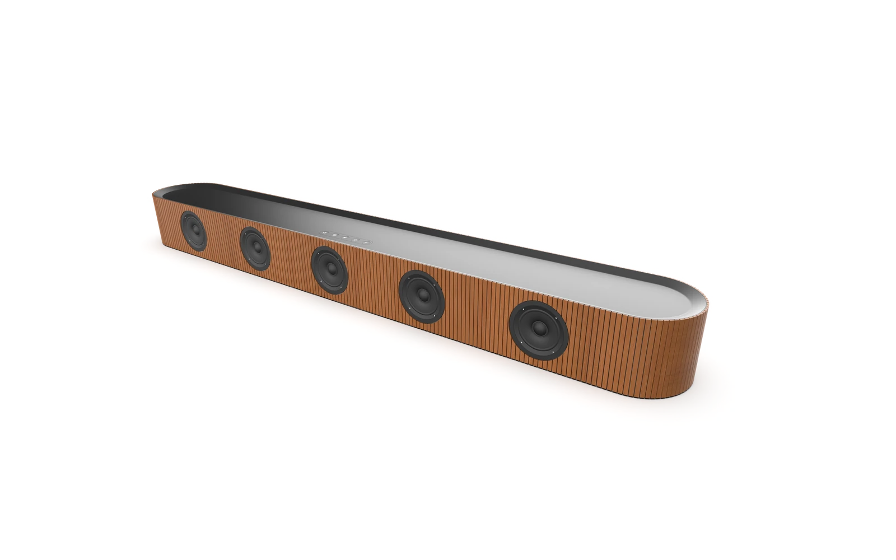

Brand-Inspired Speaker
A focused form study inspired by Scandinavian audio design. I explored proportion, material contrast and a clear product language through Alias modeling and KeyShot visualization.

- Role
- Individual form study
- Duration
- 2 weeks
- Tools
- Autodesk Alias and KeyShot
- Focus
- Form, materials and visualization
The brief
Develop a speaker concept inspired by Scandinavian audio design. I studied the restraint and material balance associated with Bang & Olufsen and Sonos, then developed a soundbar with its own identity.
The long rounded enclosure and repeated timber rhythm create a recognizable object. Context visualization helped me judge how its proportions and materials would sit in a living space.
Form and detail
I developed the form and material relationships in Autodesk Alias and visualized them in KeyShot. Vertical timber slats, exposed drivers and an inset upper surface create a repeated rhythm across the horizontal shape.
Close views helped resolve the relationships between the shell, drivers, low-profile controls and rear connections. The aim was a calm overall form with enough detail to make the product feel considered.




The result
The final soundbar concept combines warm timber, a contrasting upper surface and minimal controls.
This was a form and visualization study.





What I learned
I learned how to take inspiration from established brands while developing my own design direction. The project strengthened my surface modeling in Alias and my ability to use materials and lighting in KeyShot to present a concept clearly.
- Skills I developed
-
- Translating brand references into a distinct product language.
- Refining proportion, surfaces and material relationships.
- Tools & methods
-
- Autodesk Alias for surface and form modeling.
- KeyShot for materials, lighting and rendering.
- Context, detail and exploded-view studies.